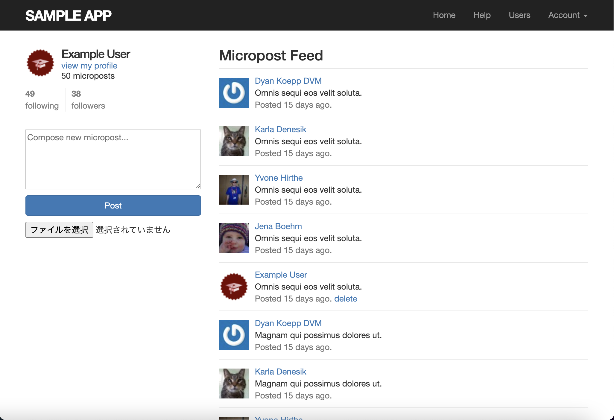
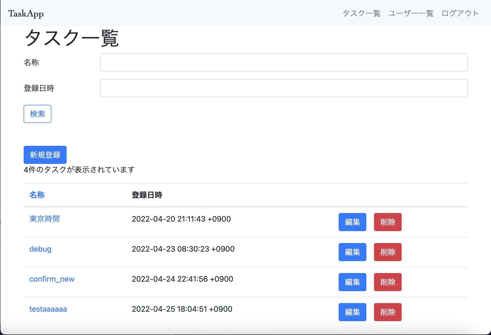
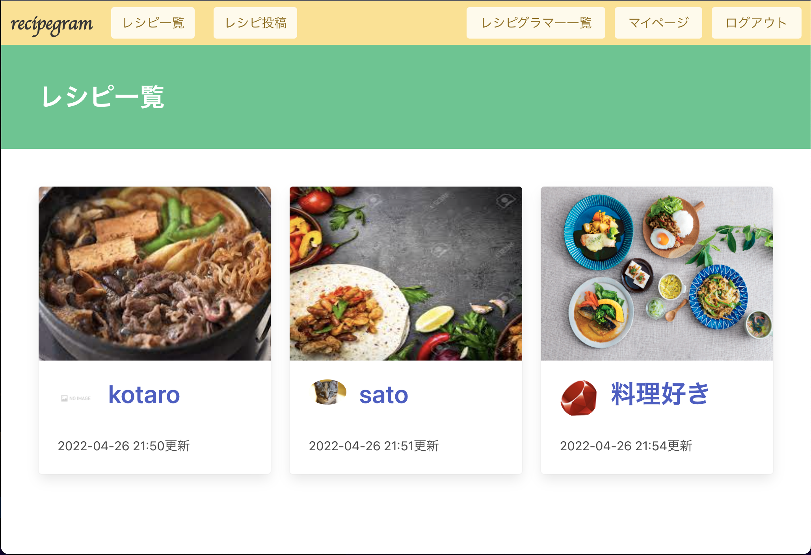
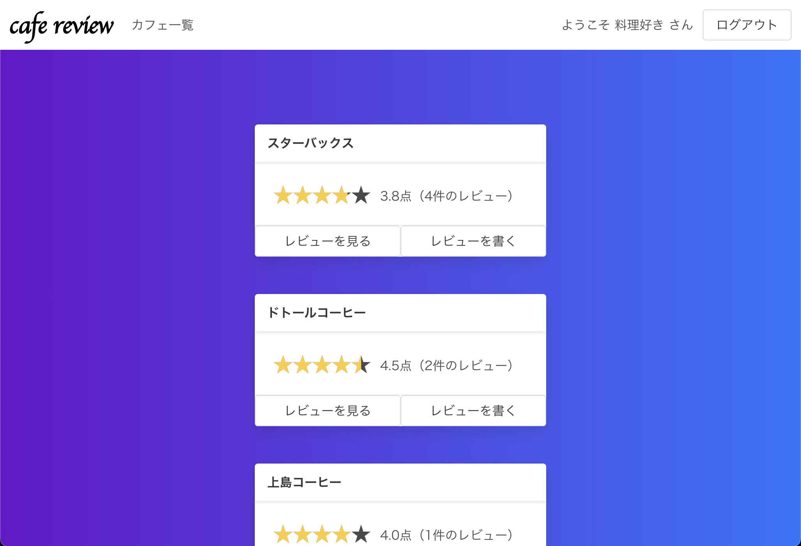
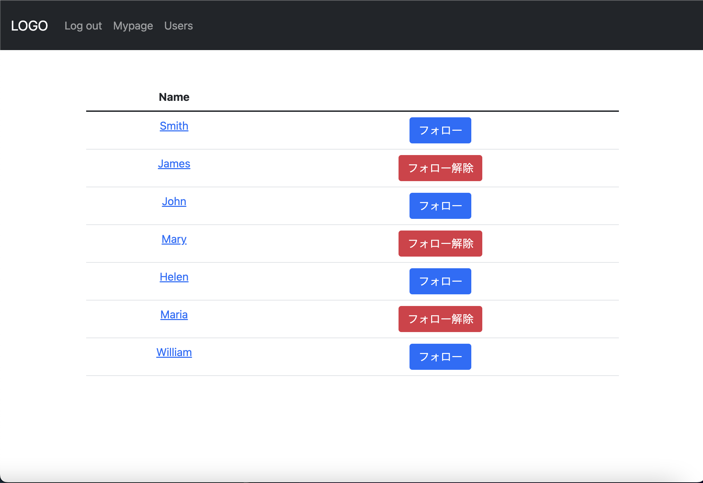

Portfolio
Jesse Sato
menu
close
TOP
PROFILE
SKILL
WORKS
CONTENT
PROFILE
氏名：佐藤 勲（さとう いさお）
居住地：神奈川県横浜市
ポートフォリオをご覧いただきありがとうございます。
日々プログラミングのスキルアップに勤しんでいる24歳です。
サッカーと漫画が大好き‼️ 最近は実家で飼っている豆柴と公園に行くことが多いです。
github
SKILL
HTML5
CSS
JavaScipt
Ruby
Ruby on Rails
MySQL
WORKS
ポートフォリオ
使用スキル
html/css/javascript

rails_tutorial
使用スキル
ruby/Rails/minitest

タスク管理
使用スキル
ruby/Rails/rspec/slim

レシピapp
使用スキル
ruby/Rails

カフェレビュー
使用スキル
ruby/Rails

フォロー機能
使用スキル
ruby/Rails/relation
CONTACT
仕事の依頼・ご相談など メールまたはツイッターDMでご連絡ください。
jesse@gmail.com
or